Conlang Translator
Lets the characters of your story speak a constructed language. You describe the language (its rules and its words) and the model writes the direct speech of the characters who speak it in that language, while the story keeps the English behind it.
The text of the story holds the conlang. Everything that reads the story to a model (the next generation, the summaries, the lorebook scan, the annotations, the other extensions) reads the English the speech was translated from, so the model never has to understand your language to carry on the story. A click on a translated speech shows the English.
Work in progress
The extension works for a person using the screens described here and, through
The idea
-
A language is two things: rules (text, written for the model like a grammar book) and a lexicon (the words, written mostly by the model and judged by you). Languages are kept in your settings, once, and any number of books use them.
-
A book (or a folder of books) chooses its language. A part is translated by hand from its menu, by itself when it is final, or a range at a time.
-
One request to the model per part classifies every direct speech (is it said in the language, or in the common tongue of the story, by this character, understood by the listener?) and translates the speech that is. A word the language lacks is invented by the rules, reported with the reason, and added to the lexicon as new, for you to accept, change, lock or throw away.
-
The English is kept (in the data of the book, as the source of the speech) and read by every model. The conlang is the original: what you change in it by hand stays, and a part you edit is never overwritten behind your back.
Languages
A language is edited in Settings → Extension Settings → Conlang Translator, the panel that lists your languages.
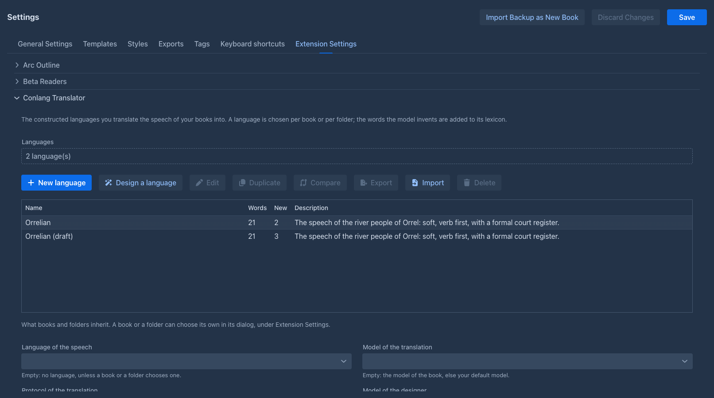
At the top are the model and protocol of the designer. Below the list are the choices that books and folders inherit from you: the language, whether a part is translated by itself,
and the model and protocol of the translation. A book or folder can set its own, see
The editor
The editor is a window with five tabs; it works on a copy until Save, can be resized, dragged and maximized.
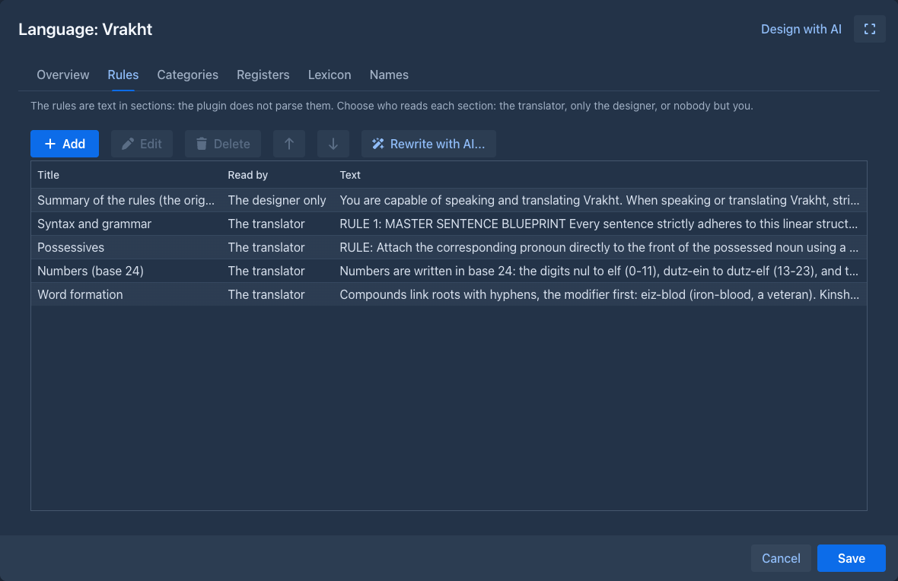
The lexicon
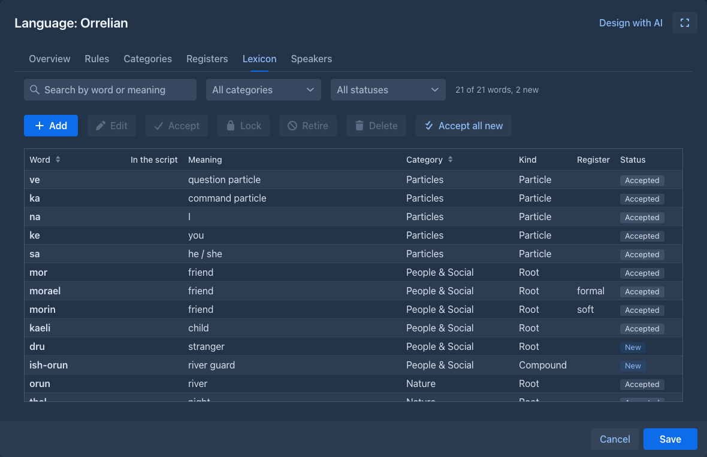
The grid has a search (by word or meaning), filters by category and status, and the actions Add, Edit, Accept, Lock, Retire, Delete and Accept all new. A word has:
-
the form (how the story writes it), optionally the form in a script, a category and a kind (root, compound, particle, name, number, phrase);
-
one or more meanings (a homophone has several, each with a part of speech and a note) and the other forms of the concept (the formal, soft and vulgar word for the same thing, shown and sent together);
-
the rationale: why the model chose the word (the rule or the roots). You read it to judge the word, and it goes back into later requests so that the next invention follows the same logic;
-
an origin: yours, or the model's (with the part it was invented for, the model and the time). A word of the model that you edit becomes yours;
-
a status: New (the model made it and you have not looked yet), Accepted, Locked (the model may use it but never redefine it) or Retired (kept, not offered to the model: for a word that was replaced).
A word the model needs but the lexicon lacks is never dropped for being new: it is added at once, so the next part says the same thing the same way, and it waits as New. A translation that uses words that are not in the lexicon and that the model did not report is flagged, because nobody can tell whether the word is a mistake.
Names for the Name generator
The Names tab of the editor makes the language available to the Name generator: the names it gives sound like the language. Add a name category (for example Places or People), then check the words of the lexicon it is made of. The search and the category filter narrow the list, Check all shown and Uncheck all shown act on the words that are shown, and Preview names makes 20 names from the words that are checked now, before you save anything. The Name generator trains a Markov chain on the checked words, so a category needs a few words (a dozen or more gives better names).
Only your choice is kept, not the words: a word you change is read as it is now, and one you delete, or retire, is left out when the names are made. After you save the settings, the
category is offered in the Name generator (the lore generator's and the arc outline's Tools dialog, the generate-names command, an agent's run) as Conlang - language - category.
It is your own: another user of the installation sees only their categories.
The designer
The Design with AI menu of the editor asks the model for help, always with the language as it is (its rules, registers, categories, lexicon and the example lorebook), and always as a proposal: nothing is written before you review it.
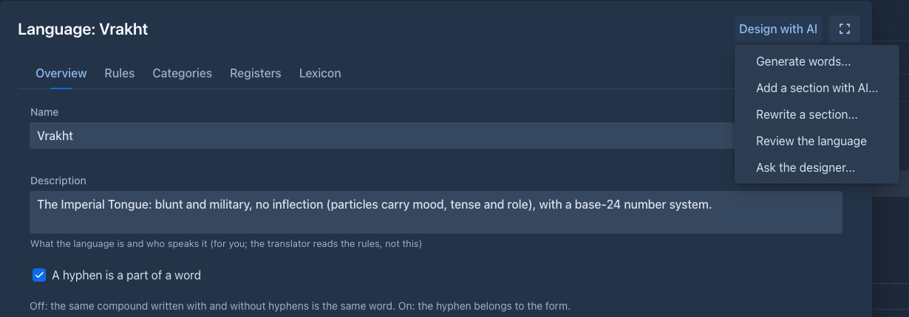
Design a language in the panel is a wizard of seven steps (the brief, the sounds, the writing, the grammar, word formation, the first words by category, and a test with sentences). Each step is a section that the model proposes and you edit, refine with a note and accept; the language exists only in the window until Finish.
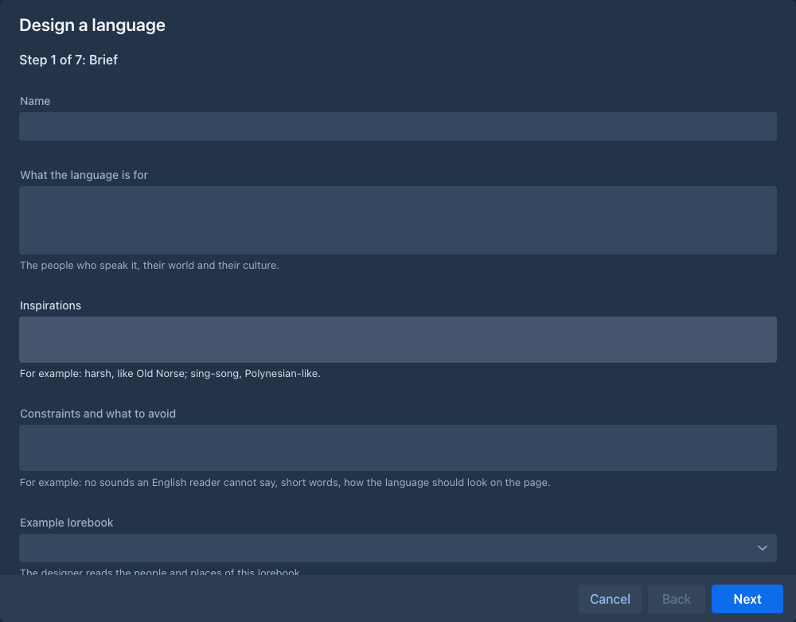
Comparing and merging
Compare (and the import of a language you already have) opens a window with the differences between two languages, each a line with a check box: what was added, changed, deleted or moved among the language's fields, rules, categories, registers, words and categories of names. A change that both sides made differently is a conflict: your value is kept until you choose theirs or write your own. What you pick is written into the language on the screen, and stored when you save the Settings screen. The same window shows what the designer proposes.
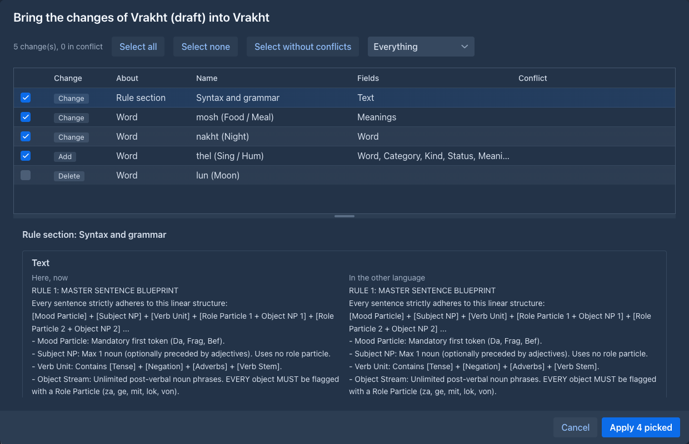
Choosing the language of a book
The Prompts tab of the book window, under Extension Settings, has the fields of the extension; the folder window has the same. Empty means inherit: the folder above, then the settings of your user.
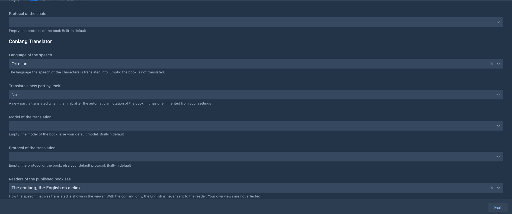
The Conlang tab of the book
The story window has a Conlang tab (in the same dock as the chapters and the lorebook; drag it where you like) for the language of this book. It has four tabs
of its own, and Refresh reads the language again after you changed it in the window of the book. A book with
Words
The lexicon of the book's language, with the search, the filters and the actions of the
Speakers
Who speaks the language in this book. The speakers belong to the book, not to the language: the same language is spoken by other people in another story, so a language you duplicate, export or compare carries no characters.
By default everybody speaks the language except the listed characters (or, the other way round, only the listed ones). This is only the default: the text overrides it ("she said in the common tongue", "the guard could not understand a word") and the model decides for every speech. For each character you may note the gender (a language that marks gender gets it wrong when the part only says "her") and the voice ("formal, clipped, coarse"), which the model matches to the registers of the language. Changes are stored in the book at once.
Each character can also have a level of understanding: understands nothing, knows a few words, follows most of it or follows everything. Leave it empty (or follows everything) and the
models are told nothing. Use it for the people who hear the language without speaking it: Tomáš: understands nothing, Other villagers: follows most of it (the name is only text, so a group works). The levels are
static for the whole book and are handed to the models as information; what a character does with it is up to the model, and you can always say more in the instructions ("Tomáš does not understand what they say").
They reach the models in two ways: the story model gets a short message with the levels (inserted into the prompt like the Author's Note; the checkbox above the list turns it off and the number says how many
messages from the end it goes), and the model that reviews a part (Annotate with AI) gets them as a section of the facts, so it can flag a character who reacts to words they cannot follow. If you would rather
place the text yourself, turn the insertion off and use the {{command::conlang-understanding}} macro in a template; it takes an optional list of characters to keep.
Languages
The other languages of the book, besides the one its Language of the speech field names: see
Quick translate
Write a text in English (a phrase, a name, a line you have not written yet), optionally who says it and to whom, and press Translate: the model translates it into the language of the book with the rules, the registers and the lexicon, and the notes of the characters named in the text. Nothing is written into the story. The result is the translation, a note on the choices, and the words the translation needed that the lexicon lacked, each with its meaning and why; select the ones you want and Import the selected words: they go into the lexicon as new, the same as the words of a translated part. Words in the translation that are neither in the lexicon nor reported are listed as a warning.
More than one language in a book
An epic may have a tongue for the elves, another for the dwarves and a third for the orcs. A book names one language first (the field above, which a folder or your settings may also give) and the Languages tab of the Conlang tab adds other languages from your library, one by one, and takes them away again.
-
Each language has its own speakers. The Speakers tab is about the language the field at the top chooses. The first language is spoken by everybody except the characters you list, as before; a language you add starts as "only the listed characters speak it" with nobody listed, so it is not asked for anything until you list who speaks it. List a character as an exception of the first language when another language is theirs, or the first language is asked for their speech too (a speech two languages claim stays with the one that is asked first). A character may speak more than one language (list them in both; the text of the part tells the model which one a speech is in).
-
One request for each language. A request holds the rules and the lexicon of one language only, and only the speeches of its speakers; a part with the speech of two languages takes two requests, one after the other. The second one reads the part with the English of the first one's speeches and leaves those speeches translated. A part whose point of view and present characters are all outside the speakers of a language is not asked for that language (a part that names no character is asked for every language that has speakers).
-
A passage knows its language. The popover, the export and the viewer work as before; Translate the speech again for one language leaves the speeches of the others alone, and Put the English back can be for one language or for all.
-
The menus ask which language when the book has more than one: the menu of a part (Translate the speech: one of the languages or All languages) and the right click on a selected sentence (one language). Translate parts has a Language field (all languages by default); the parts that are not translated means "not translated in that language".
-
The automatic run translates a new part into every language whose speakers may be in it.
Translating
-
By hand: the menu of a part has Translate the speech. A part that is translated already is translated again from its English, so this is also how you retranslate a part after the rules or the lexicon changed. A book with more than one language asks first
which one . -
By itself: with Translate a new part by itself, a generated part is translated as soon as it is final. A regenerate of a part gives it new English and removes the old translation.
-
A sentence you wrote: select it in the text of a part, right click and choose Translate the selection. The model translates the selected text (spaces and a pair of quotation marks around it are left out) with the language, the notes of the characters and the story around it; the text is replaced by the translation and the English is kept as the source of the speech, so a click on it shows the English like on any translated speech. The words the model had to invent are added to the lexicon as new, as for a translated part. A selection that holds a translated speech is refused (put the English back first), and so is one made in a part that changed meanwhile.
-
A range: Translate parts in the tools menu of the story opens a window that stays open beside the story.
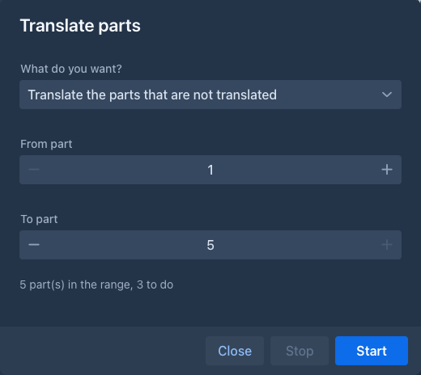
Choose From part and To part (parts with text, counted from 1 as in the export) and what to do: Translate the parts that are not translated, Translate the translated parts again (after the rules or the lexicon changed), or Put the English back, after a question. The window says how many parts the range holds and how many the choice works on, shows Part n of m, and a Stop that takes effect after the part that is being done (a request to the model that has begun cannot be taken back). A part that fails is counted and the run goes on; a missing language or model ends it. The story is drawn again when the run is over. A part you edit while it runs makes that one part fail, not the run.
A translation is stored like any change of the text: the history of the part gets a version, the part is not marked as edited, and the English is kept. A speech you changed by hand is left as it is when the part is translated again or put back to English, because it holds your words.
A translation takes as long as the model takes for the part: minutes on a local model that thinks. The extension asks the model to think (the translation of gender, number and register is much better that way), so give the model a generous output limit.
What the reader sees
In the story
A translated speech has a dotted line. A click on it shows the English in a popover: who said it, and (not understood by the listener) when the listener does not understand the language; a red note says that you edited the conlang text after the translation, so the English may not be what it says now.
Edit the source (a button in the popover, in your own views only; the readers of a published book do not have it) opens a small window with the translation as the story has it and the English
the models read. Use it when a native speaker fixed the translation by hand and the English says something else now, or when the model got the English wrong. Saving gives the speech its new
English, takes the translation as it is now as the one the English belongs to (the red note goes away) and from then on the models read the new English in its place. The text of the part is not
changed, and Translate the speech again replaces both. conlang-edit-source does the same from the command line.
Search and replace in the sources (the button with the arrows at the top of the Conlang tab) opens the application's search and replace window over the English sources of the translated speeches of the active branch (plain text or a regular expression, with or without case; the table lists the speeches that have a match by part and speech number). Use it for a name that was spelled two ways in the English. Only the sources change; to change the words of the translation itself use the search and replace of the book. A speech whose source was changed after the search is left as it is and counted.
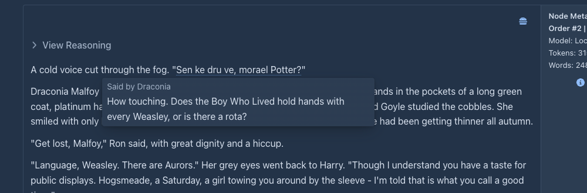
The viewer
The viewer of a published book shows the translated speech the way the book asks, with the field Readers of the published book see (a choice of the book or of its folders; your own defaults never decide what a reader sees):
In the click mode the page holds only the conlang; the English of a speech is fetched from the server when the reader clicks it.
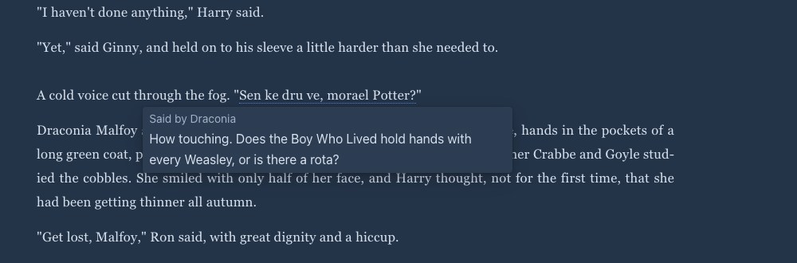
Exporting
When the book has translated speech, the export dialog has the field Translated speech:
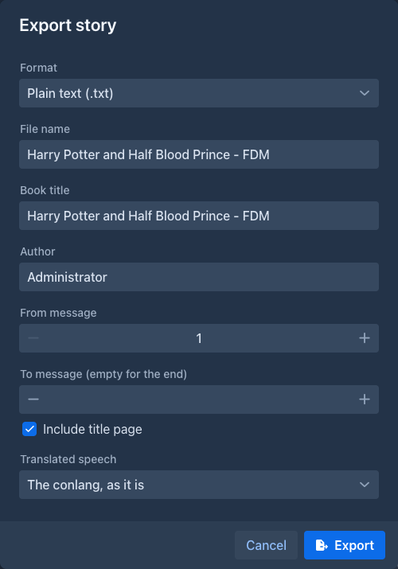
The footnotes are the footnotes of the export: linked notes in HTML and EPUB, endnotes after each part in plain text, real footnotes at the foot of the page in Word and PDF. A speech you edited after it was translated stays as it is and has no footnote. The stored text of the book is never changed by an export.
Commands
Everything the screens do is also a command, for the command line and for agents: an agent can make a language, grow it, translate a book and check the result without
a person at the dialogs. A language is addressed by its name (the case does not matter) or its id; a rules section by its title or its number in conlang-list-rules; a category by its name or number; a word by its
form (the id of conlang-list-words only to tell homophones apart); a part as in the other commands of the application, by its handle or its position on the active branch (the first part is 1). The command line takes every
argument of a command; an agent may leave out the optional ones.
Agent runs
An agent works on a copy of the book, and the languages are not part of the book, so an agent cannot change your library behind your back. The first time a run changes a language (a word, a rule, or the words a translation invents), that language is copied into the copy of the book, together with the version it was copied from; from then on the run reads and writes its own copy. A run that only reads, or only translates with the words it has, never copies anything. The copy goes wherever the copy of the book goes: the checkpoints and their restore, the review of the run, and its delete.
When you apply the result of the run, the language lands in the book, not in your library. The Conlang tab of the book then shows An agent run changed the language ... with Review and Drop.
Review compares three versions, the language when the run copied it, the run's version and your library as it is now, so what you changed in the library meanwhile is kept, and what both of you changed is a conflict for you
to decide. The same from commands: conlang-pending-changes lists the changes as numbers and conlang-take-pending-changes takes them (it asks you). A language the run made is added whole after you confirm.
The run reads the library until it first changes a language, and its own copy afterwards: what you change in a language while the run works is not seen by the run, but is not lost either.
Limits
-
The quality is the model's. The extension checks what it can for free (that the quoted speech is in the part, the language, the words against the lexicon and its rules for compounds and affixes) and reports the rest; it does not check your grammar. Try a language on a few parts before a long run, and use Review the language of the designer when a mistake repeats.
-
A language is shared by the books that use it. A word you change, or a word a translation adds, changes it for every book of the series. That is meant (one world), and Duplicate is how to keep a language apart.
-
An agent's language changes wait in the book. They are taken into the library by you, after the run is applied; a language is not locked while a run works.
-
Commands do not replace a word in the story and a retranslation cannot keep the translations whose English did not change (every part of the range is asked again).
-
A phone has the panel, the editor, the review and the wizard, but the lexicon grid scrolls sideways; the tap on a speech in the viewer works; the story side (the menu of a part, the range window, the click in the story) was not tried there.